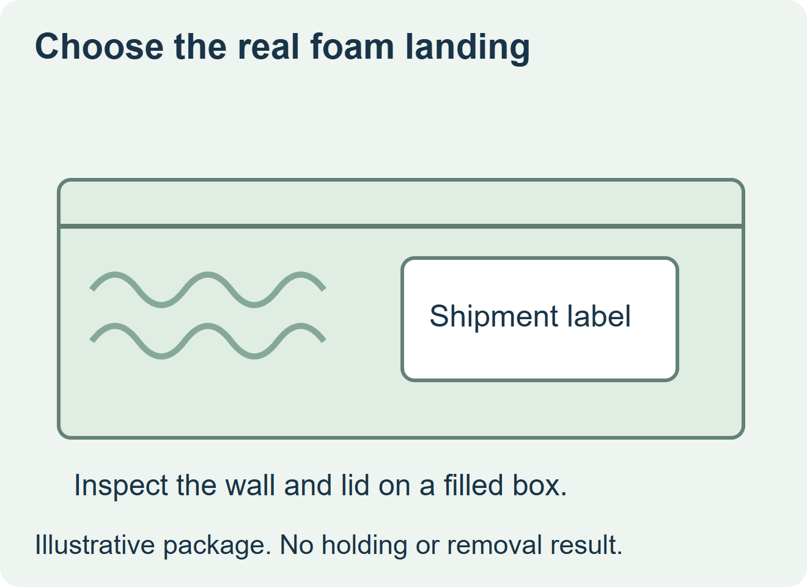
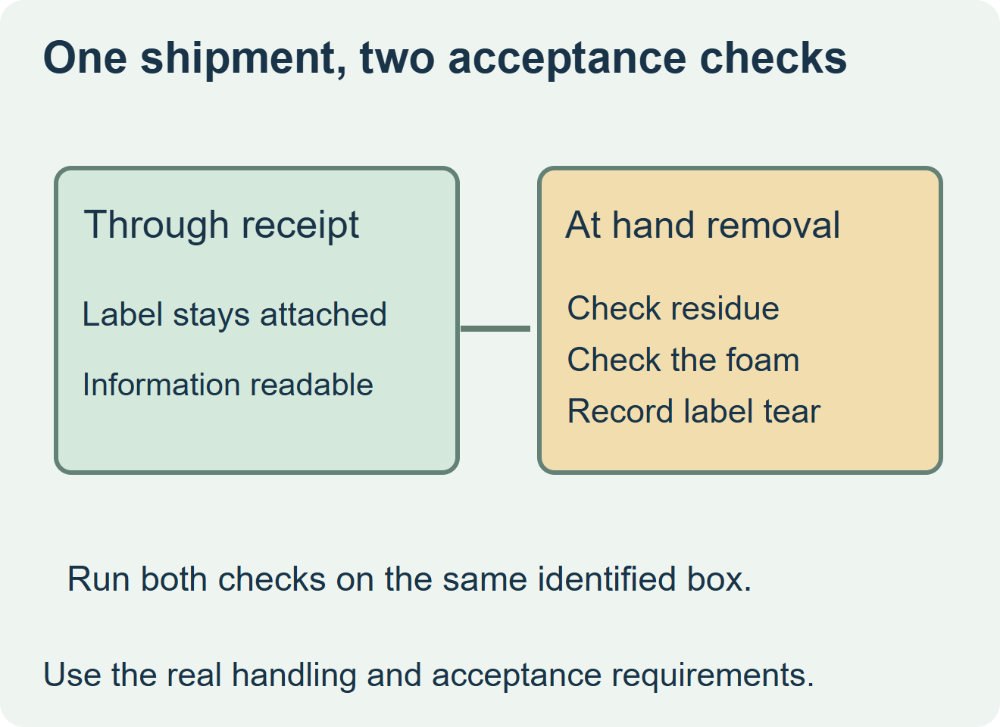

Ask for a label that can hold on the actual EPS wall through the cold route and be removed at the agreed time. Approve both results on a filled box. If the label lifts or pulls beads from the box during removal, compare a supported smoother landing or an existing holder approved for the package.


Identify the rough wall the adhesive will touch
EPS is expanded polystyrene. Label adhesion depends on the actual molded area, including its texture, contours, moisture and temperature. Examine the lidded, filled box rather than qualifying a separate smooth polystyrene sheet. HERMA specifically describes rough EPS fish boxes as needing a label that can grip strongly and still permit hand removal. This is a specific application example. Ask the converter for evidence on the named box and construction. HERMA packaging labeling applications
Start with a reachable wall area that stays readable in the expected stack. Keep clear of lid gaps, slots, bands, wall steps and areas that the receiving team cannot see. If the manufacturer has a flat external area or a holder, ask whether it is approved for the shipment label. Keep the external label and the identified contents separate from any package or contact assessment.
| What you observe | Decision to compare |
|---|---|
| Label lifts, moves or becomes unreadable before receipt | Review the actual texture, application condition and handling position with the supplier. |
| Holding is acceptable and the label peels as intended | Retain that exact construction and box identity for the offered route. |
| The label tears or leaves residue, or the foam surface comes away | Compare a hand-peel construction or a packaging-approved alternative landing and repeat both checks. |
| An approved holder removes the need for a direct bond | Confirm that the proposed insert stays secure and readable in the actual route. |


Obtain the two observations on the same specimen
Apply identified samples using the actual packing conditions and record the boxes and labeling method. Review readability and attachment at dispatch, during the intended cold handling and at the last scan or reading. After that final event, observe the agreed hand peel. Record label tearing, residue and foam damage separately so the supplier can see what failed. Define what is acceptable with the receiving and packaging teams.
For a hypothetical chilled seafood shipment, the label on a textured end wall remains in place but pulls foam beads during receiving removal. A smoother side panel is worth comparing if it remains visible in the actual stack. Keep the same handling and removal route for a fair comparison. The surface change might solve the removal problem without requiring the buyer to promise a new reuse or recovery pathway.
Write holding and removal into the same brief
Ask the label supplier to identify the proposed face, adhesive, dimensions and any required application conditions. Attach the box model, marked position and the observations expected at receipt. Record who owns any approval of the holder, actual shelf life, box reuse or disposal.
Discuss the unresolved label requirement
Send exact box model and wall finish, filled lidded sample, label drawing, application temperature and moisture, final reading and peel steps and quantity. Review food label options and prepare a label specification inquiry. The contact page opens an email draft and lists email or WhatsApp for attachments. Supply, proof options, testing, pricing and timing require project confirmation.